Description | 설명
To enhance automation, safety, and reduce fatigue in power plant inspections, I am developing a solution integrating robotics and AI technologies with a focus on automating gauge inspections. Given the large number of gauges, mobile robotic units will replace fixed CCTV cameras to provide efficient monitoring. Furthermore, due to the diversity of gauge type, condition, wear, effective processing of these images will be required for accurate inspection. The developed solution model utilizes object detection AI models, image analysis, and OCR methods to accurately inspect and analyze gauges.
발전소 점검원들의 피로도와 사고 위험을 줄이기 위해 로봇과 인공지능 기술을 통합한 솔루션을 개발하고 있습니다. 다양한 종류와 많은 양의 계측기 때문에 고정된 CCTV 대신 이동식 로봇을 사용하여 효율적으로 설비를 감시할 것입니다. 본 솔루션 모델은 객체 탐지 AI, 이미지 분석 및 OCR 기술을 활용하여 계측기를 정확하게 추출하고 분석합니다.
Try our tool | 직접 체험해보기
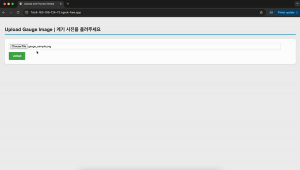
Try out our interactive DEMO!
데모 체험해보기
Process | 과정
1. Robot Selection | 로봇 선정
2. Inspection Data Acquisition | 점검 데이터 수집
Selection of robot that meets specifications and requirements
규격과 요구 사항을 충족하는 로봇 선택
Possible gauge inspection outcome combinations
계기 점검 결과 종류
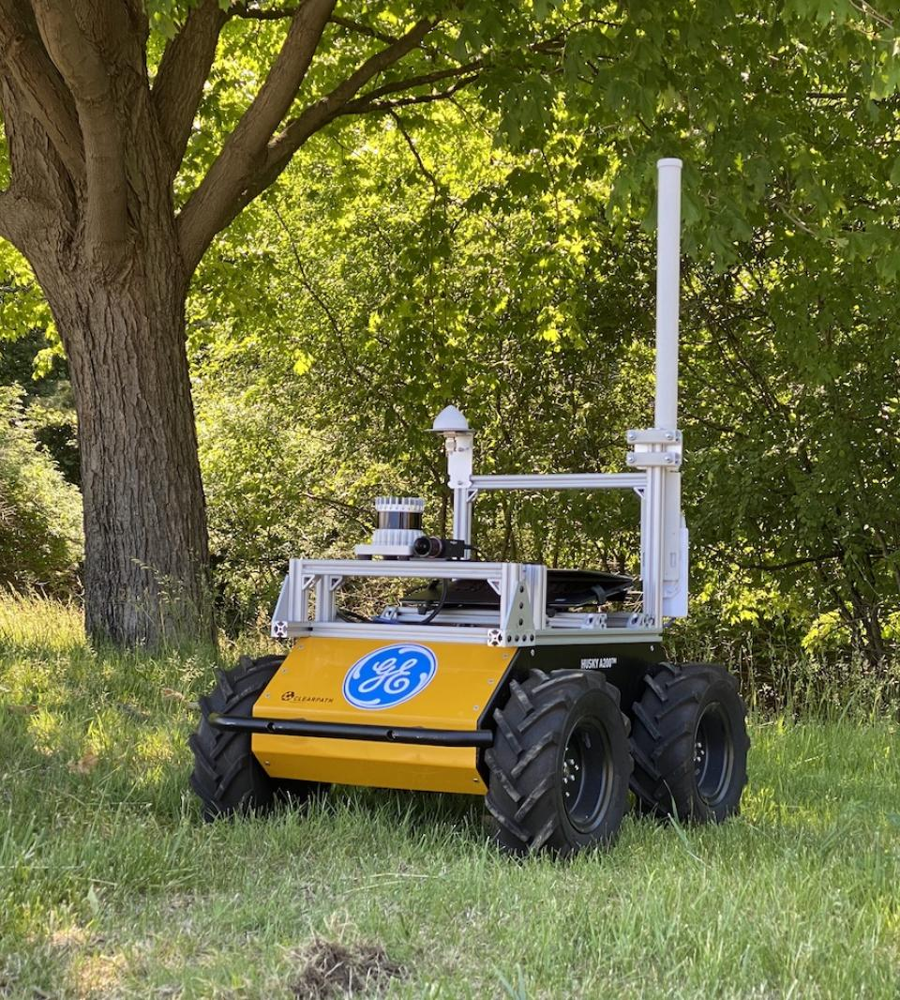
GE: Wheeled robot
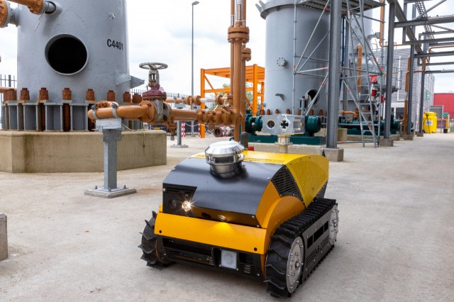
EX Robotics: Tracked Robot
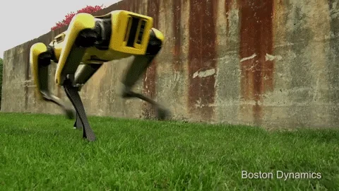
Boston Dynamicss: Quadruped Robot
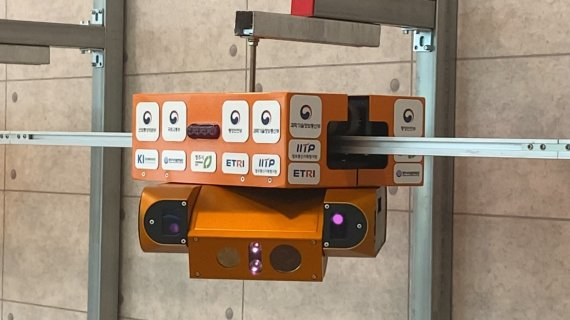
ETRI: Rail Robot
Single Gauge
Multiple Gauges
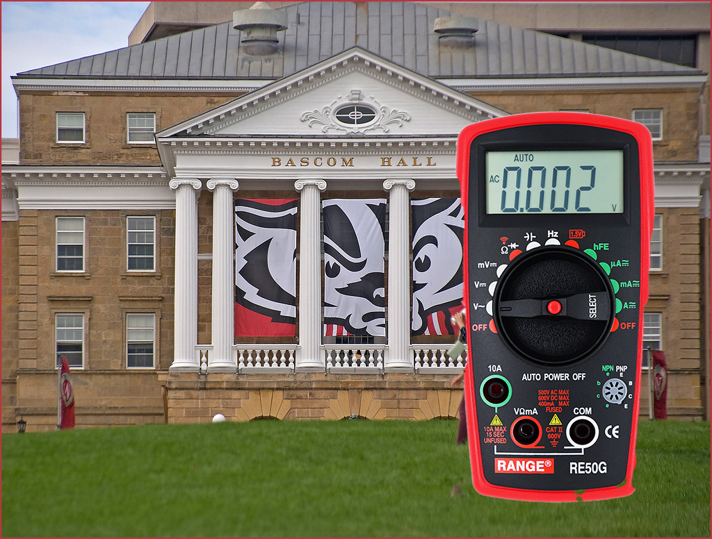
Digital Gauge
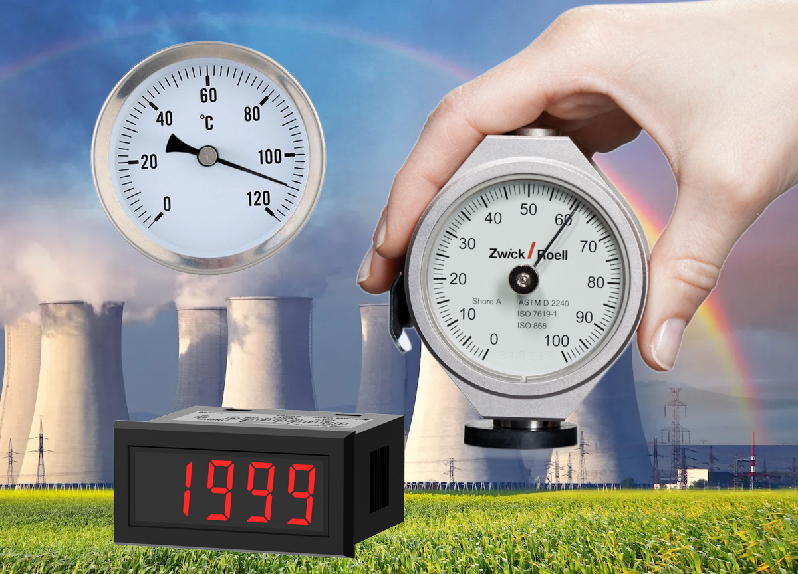
Mixed Gauges
3. DRAG the Image | 이미지에 DRAG 적용
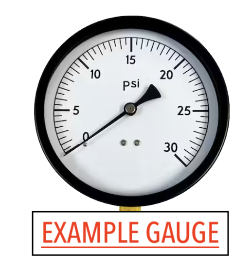
Select a possible Inspection result scenario from "2. Inspection Data Acquisition".
3.1 Gauge Detection | 계기 탐지
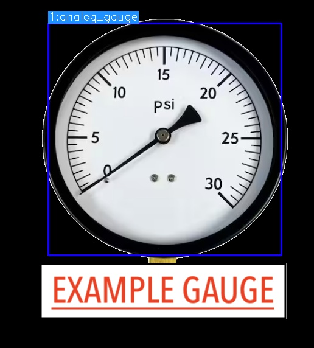
Use object detection models to detect gauges in image.
객체 탐지 모델을 사용하여 이미지에서 계기를 탐지합니다.
3.2 Bounding Box Crop | 바운딩 박스 크롭
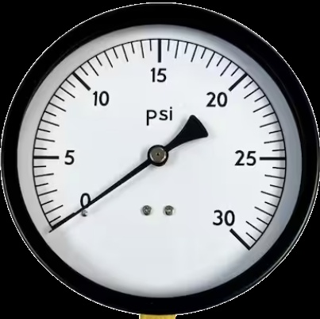
Crop the detected gauge from the image.
이미지에서 탐지된 계기를 잘라냅니다.
3.3
AG: Ellipse Detection | 타원 검출
DG: Total Digit Reading | 전체 추론 읽기
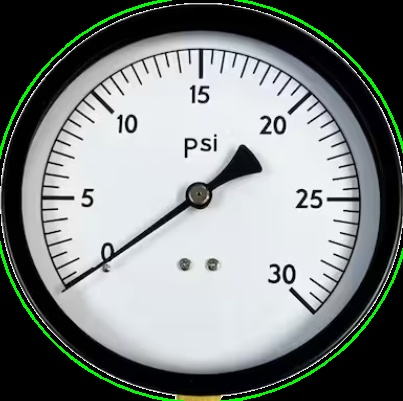
AG: Detect ellipses from image. DG: Read gauge using digit detection
AG: 이미지 내 타원을 검출합니다. DG: 객체추론을 통해 게이지를 읽습니다.
3.4
AG: Gauge Outline Circle Crop | 계기 테두리 원 크롭
DG: Total OCR Reading | 전체 OCR 읽기
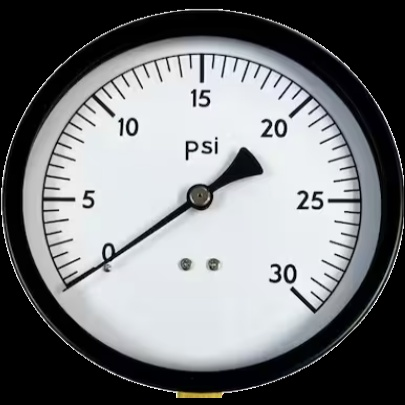
AG: Crop and mask ellipse that best matches the gauge outline. DG: Read gauge using OCR.
AG: 게이지 외곽선과 가장 잘 맞는 타원을 잘라내고 마스크 처리합니다. DG: OCR을 통해 게이지를 읽습니다
3.5
AG: Feature Detection (Base, tip) | 주요 포인트 탐지
DG: Digit Detection | 디짓 탐지
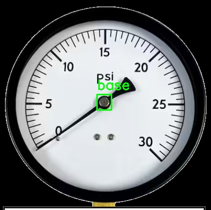
AG: Detect essential features for analysis. DG: Digit detection.
AG: 분석을 위한 포인트들을 추가 탐지합니다. DG: 객체 추론을 통해 디짓을 검출합니다.
3.6 OCR
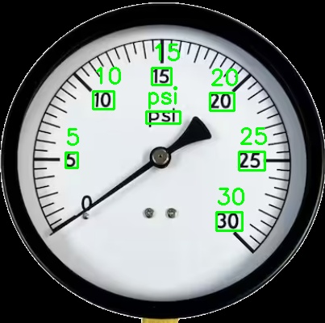
Extract and convert text information using OCR.
OCR을 사용하여 계기 내 문자를 탐지 및 변환합니다.
3.7
AG: Number-Angle mapping | 텍스트-각도 할당
DG: Digit Inference | 숫자 추론
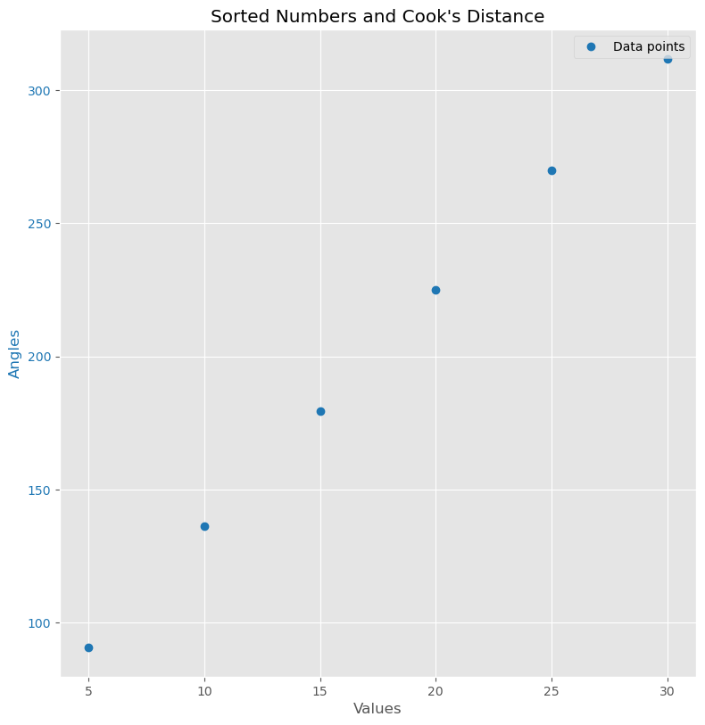
AG: Map gauge value to its corresponding angle. DG: Infer digit value.
AG: 탐지된 계기값들을 해당 각도로 매핑합니다. DG: 검출된 디짓별 숫자를 검출합니다.
3.8
AG: Outlier Removal | 이상치 제거
DG: Value Verification | 검출값 검증
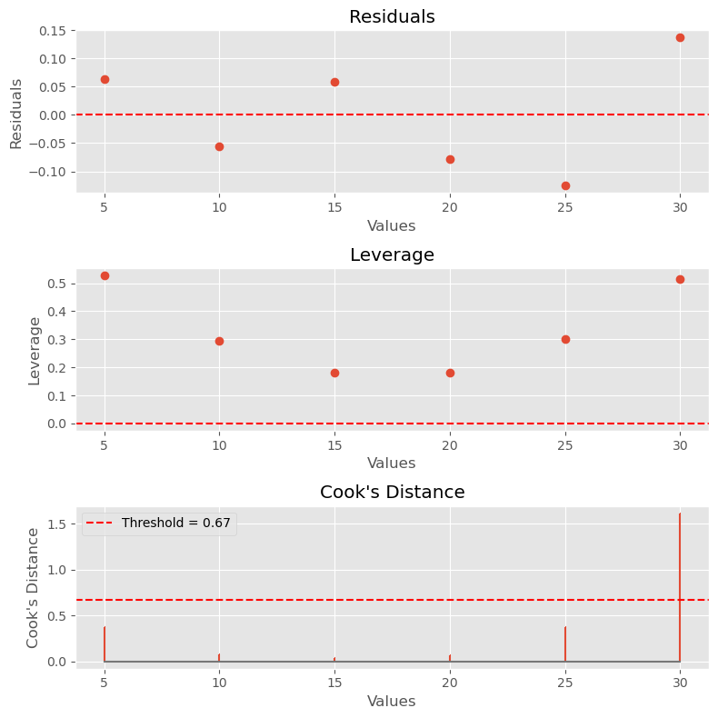
AG: Remove outliers using various statistical methods. DG: Values found using the 4 techniques are compared and verified.
AG: 다양한 통계 기법을 사용하여 이상값을 제거합니다. DG: 검출된 숫자들을 검증합니다.
3.9
AG: Needle Detection | 바늘 탐지
DG: Decimal Point Detection | 소수점 탐지
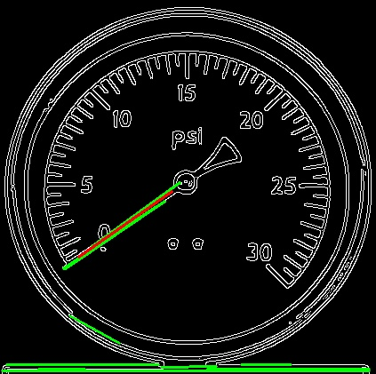
AG: Use detected features to determine needle position. DG: Use digit coordinates to detect decimal point.
AG: 탐지된 특징들을 사용하여 바늘 위치를 결정합니다. DG: 디짓 위치를 이용하여 소수점을 찾아냅니다.
3.10
AG: Needle Angle Calculation | 바늘 각도 추정
DG: Minus Sign Detection | 마이너스 기호 탐지
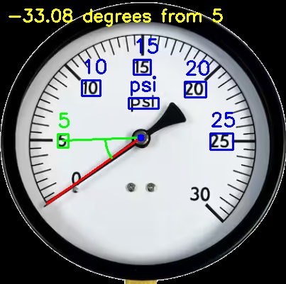
AG: Calculate the needle angle based on the detected needle position and lowest value position. DG: Use digit coordinates to detect minus sign.
AG: 탐지된 바늘 위치와 최저값 위치를 기반으로 바늘 각도를 계산합니다. DG: 디짓 위치를 이용하여 마이너스 기호를 찾아냅니다.
3.11 Gauge Reading | 계기 판독
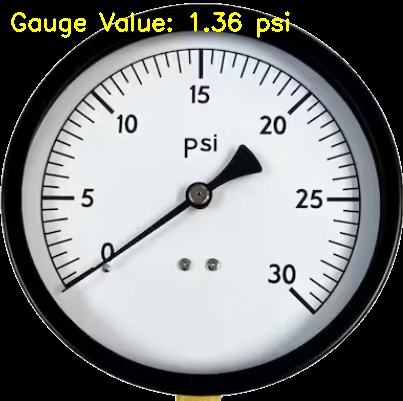
Read the gauge value.
계기 값을 읽습니다.
References | 참고 문헌
1. Peixoto, J., Sousa, J., Carvalho, R., Santos, G., Mendes, J., Cardoso, R., & Reis, A. (2022). Development of an Analog Gauge Reading Solution Based on Computer Vision and Deep Learning for an IoT Application. Telecom, 3(4), 564-580.
2. Leon-Alcazar, J., Alnumay, Y., Zheng, C., Trigui, H., Patel, S., & Ghanem, B. (2022). Learning to Read Analog Gauges from Synthetic Data. In Proceedings of the IEEE/CVF Winter Conference on Applications of Computer Vision (WACV).
3. Adsul, S., Kulkarni, S., Godbole, S., & Narwane, M. (2021). Reading Analog Gauges Using Open CV for Hazardous Area Applications. International Journal of New Technology and Research (IJNTR), Special Issue VIT Campus, 39-42.
4. Song, J., & Zhang, L. (2015). Research of Automatic Interpretation of Analog Gauge's Indicating Data. International Symposium on Knowledge Acquisition and Modeling (KAM 2015).
5. Gellaboina, M. K., Swaminathan, G., & Venkoparao, V. (2013). Analog dial gauge reader for handheld devices. In Proceedings of the 2013 IEEE 8th Conference on Industrial Electronics and Applications (ICIEA), 1147-1150.
6. Lauridsen, J., Grassmé, J., Pedersen, M., Jensen, D., Andersen, S., & Moeslund, T. (2019). Reading Circular Analogue Gauges using Digital Image Processing. In Proceedings of the 14th International Joint Conference on Computer Vision, Imaging and Computer Graphics Theory and Applications (Visigrapp 2019), 373-382.
7. Zuo, L., He, P., Zhang, C., & Zhang, Z. (2020). A robust approach to reading recognition of pointer meters based on improved mask-RCNN. Neurocomputing, 388, 90-101.
8. Cai, W., Ma, B., Zhang, L., & Han, Y. (2020). A pointer meter recognition method based on virtual sample generation technology. Measurement, 163, 107962.
9. Wang, L., Wang, P., Wu, L., Xu, L., Huang, P., & Kang, Z. (2021). Computer vision based automatic recognition of pointer instruments: Data set optimization and reading. Entropy, 23(2), 272.
10. Milana, E., Ramírez-Agudelo, O.H., Estevam Schmiedt, J. (2022). Autonomous Reading of Gauges in Unstructured Environments. Sensors, 22,6681.
11. Ranjan, P., Sushruth, N., Thejus, P., Vandana, T. (2018). Automated Analog Meter Reading System Using Image Processing and Machine Learning. SJCE, Mysuru
Inspired by:
ConvNetJS | https://cs.stanford.edu/people/karpathy/convnetjs/
Special thanks to:
Yolov7: https://github.com/WongKinYiu/yolov7
Object Tracking: https://github.com/RizwanMunawar/yolov7-object-tracking